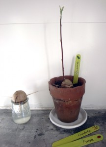

Plantar un aguacate es fácil y impresiona mucho como sale comienza a salir un tallo recto hacia el cielo...¡y al final salen las hojas!
To plant an avocado tree is easy but really amazing how there comes a tribe right out of the seed... y later on the leafs.
Ein Avocadobaum zu pflanzen ist einfach aber eindrucksvoll wie ein gerader Stiel Richtung Himmel wächst... und dann kommen noch die Blätter dazu.